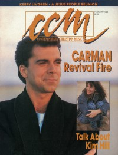

CMnexus
:
Contemporary Christian culture, music, and media.
Magazines
Profiles
Dove Awards
cmnexus.org
CM
nexus
→
Profiles
→
B
→
Stephanie Bennett
Stephanie Bennett
Writing credits listing
Nov 1988 in
CCM
11.5
"Session Drumming: A Visit With Mark Hammond"
Mark Hammond
Feb 1989 in
CCM
11.8
Debby Boone
-
Reflections
Mar 1989 in
CCM
11.9
NewSong
-
Light Your World
Jul 1989 in
CCM
12.1
"And the Beat Goes On"
Profiles of drummers:
Paul Leim
,
Robert Sweet
,
John Gates
,
Greg Morrow
,
Louie Weaver
,
Chris Kearney
,
Joe English
,
Bill Maxwell
Nov 1989 in
CCM
12.5
"Taking The High Road"
David and the Giants
Steve Green
-
The Mission
Dec 1989 in
CCM
12.6
Michael W. Smith
-
Christmas
Debby Boone
-
Home for Christmas
Twila Paris
-
It's The Thought
Larry Carlton
-
Christmas at My House
Jan 1990 in
CCM
12.7
Trace Balin
-
Here and Now
Connie Scott
-
Forever Young
Leon Patillo
-
On the Way Up
Illustrator
-
Somewhere In The World

Feb 1990 in
CCM
12.8
"Praying For Revival"
Carman
Apr 1990 in
CCM
12.10
Priscilla Engle
-
Ageless Love
May 1990 in
CCM
12.11
Helen Baylor
-
Highly Recommended
Jun 1990 in
CCM
12.12
"Sunny Side Up"
Angie Alan
GLAD
-
The Acapella Project II
Jul 1990 in
CCM
13.1
Nu Colors
-
Man Within
Angie Alan
-
Angie Alan
Jan 1991 in
CCM
13.7
"Knowledge and Innocence"
Kim Boyce
Tony Melendez
-
Ways of the Wise
David and the Giants
-
Distant Journey
CMnexus
(noun)
The magazine index
of modern music
and Christianity
© 2011 CMnexus. Last updated April 2021.
Contact:
Rants and other correspondence to:
editor -AT- cmnexus
-DØT- org
About